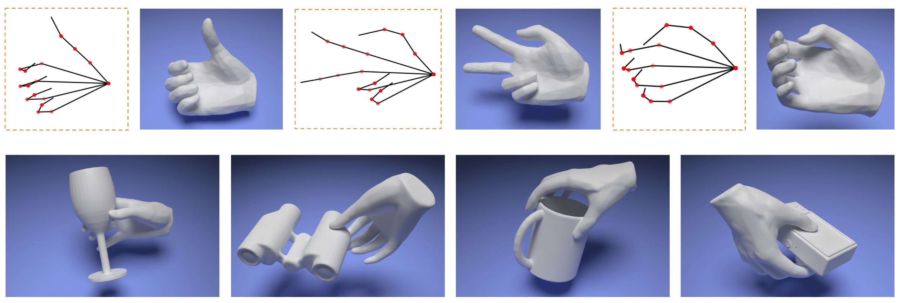
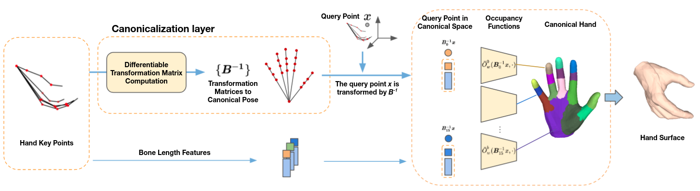

Abstract
We present Hand ArticuLated Occupancy (HALO), a novel representation of articulated hands that bridges the advantages of 3D keypoints and neural implicit surfaces and can be used in end-to-end trainable architectures. Unlike existing statistical parametric hand models (e.g.~MANO), HALO directly leverages the 3D joint skeleton as input and produces a neural occupancy volume representing the posed hand surface.The key benefits of HALO are (1) it is driven by 3D keypoints, which have benefits in terms of accuracy and are easier to learn for neural networks than the latent hand-model parameters; (2) it provides a differentiable volumetric occupancy representation of the posed hand; (3) it can be trained end-to-end, allowing the formulation of losses on the hand surface that benefit the learning of 3D keypoints.We demonstrate the applicability of HALO to the task of conditional generation of hands that grasp 3D objects. The differentiable nature of HALO is shown to improve the quality of the synthesized hands both in terms of physical plausibility and user preference.
Pipeline Overview

Given 3D skeleton or keypoint locations of a hand, our method could recovers a complete implicit hand surface without additional information. The skeleton is converted to the canonical pose using the Canonicalization layer (left). This layer enforces valid and natural bone transformations according to the biomechanical constraints. Then, we learn implicit hand surfaces for various hand shapes in the canonical pose using multiple occupancy functions. The hand shape is inferred from the bone length features, which are obtained from the given skeleton. The final surface is obtained using the marching cubes algorithm
Hand Surface Driven by Skeleton

With HALO, we could obtain hand surface (right) using only 3D key point locations (left)
Video
Citation
A Skeleton-Driven Neural Occupancy Representation for Articulated Hands
Korrawe Karunratanakul, Adrian Spurr, Zicong Fan, Otmar Hilliges, Siyu Tang
International Conference on 3D Vision (3DV), 2021
@inproceedings{karunratanakul2021halo,
title={A Skeleton-Driven Neural Occupancy Representation for Articulated Hands},
author={Karunratanakul, Korrawe and, Spurr, Adrian and Fan, Zicong and Hilliges, Otmar and Tang, Siyu},
booktitle={International Conference on 3D Vision (3DV)},
year={2021}
}
}
Contact
For questions, please contact Korrawe Karunratanakul:
korrawe[dot]karunratanakul[at]]inf[dot]ethz[dot]ch